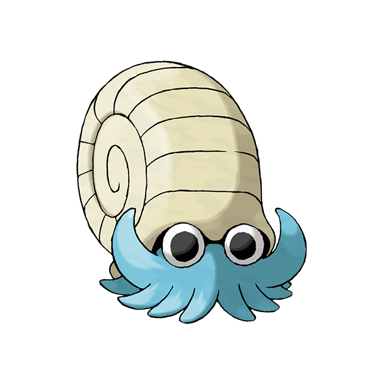

<body><div class="img-box" style="float:right;"></div><h1>菊石兽</h1>
<h3><span 外貌"></span><span -headline" .E5.A4.96.E8.B2.8C">外貌</span></h3>
<p>菊石兽与<a  ://zh.wikipedia.org/wiki/%E8%9C%97%E7%89%9B" title="wp:蜗牛">蜗牛</a>十分相似，又十分像远古时期的生物菊石虫。牠有着许多蓝色的触手，多而利于攻击。牠的背上有一个十分巨大的壳，用来保护自己。
</p>
<h4><span 性别差异"></span><span -headline" .E6.80.A7.E5.88.AB.E5.B7.AE.E5.BC.82">性别差异</span></h4>
<p>菊石兽没有性别差异。
</p>
<h3><span 特殊能力"></span><span -headline" .E7.89.B9.E6.AE.8A.E8.83.BD.E5.8A.9B">特殊能力</span></h3>
<h3><span 性情"></span><span -headline" .E6.80.A7.E6.83.85">性情</span></h3>
<h3><span 栖息地"></span><span -headline" .E6.A0.96.E6.81.AF.E5.9C.B0">栖息地</span></h3>
<p>在很久以前生活在海里。
</p>
<h3><span 饮食"></span><span -headline" .E9.A5.AE.E9.A3.9F">饮食</span></h3>
<dl><dd><i>主頁面：</i><i><a  title="宝可梦食物">宝可梦食物</a></i></dd></dl>
</body>